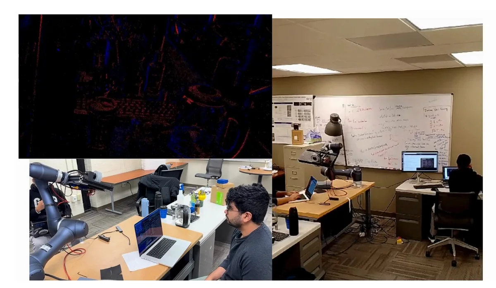
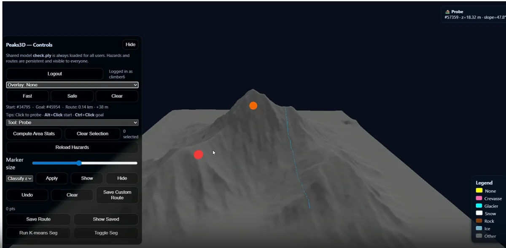
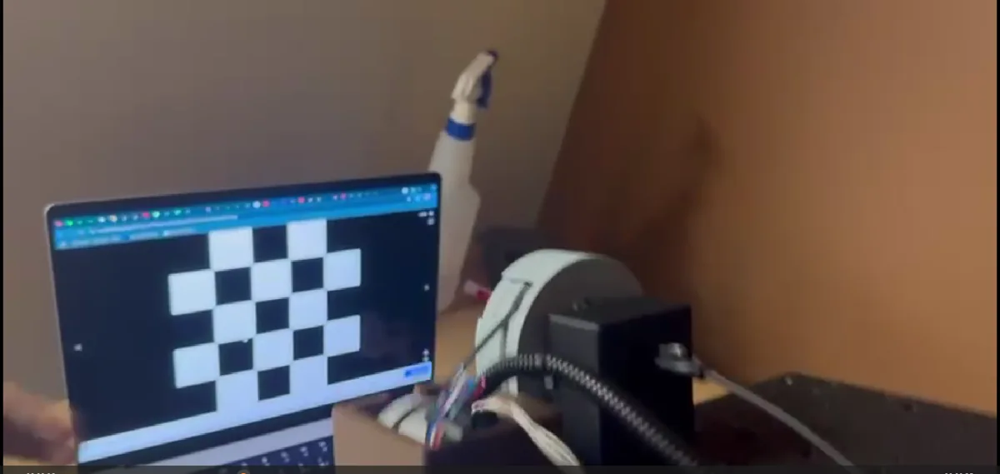
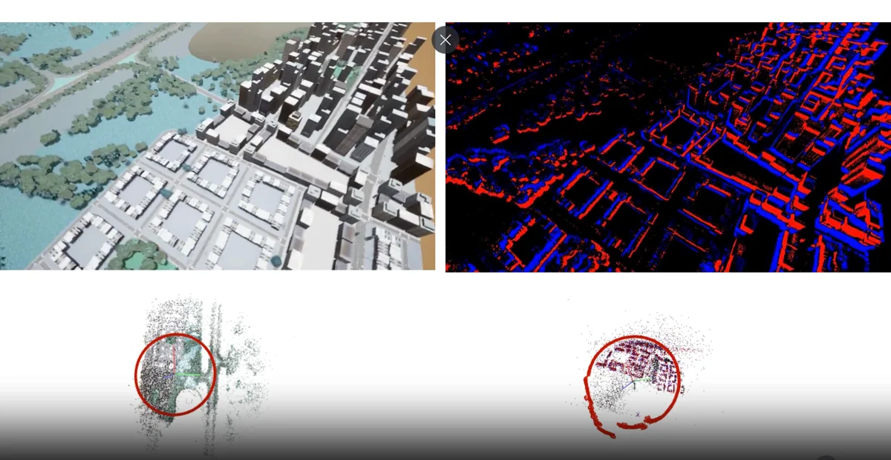
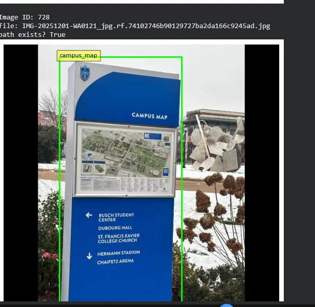
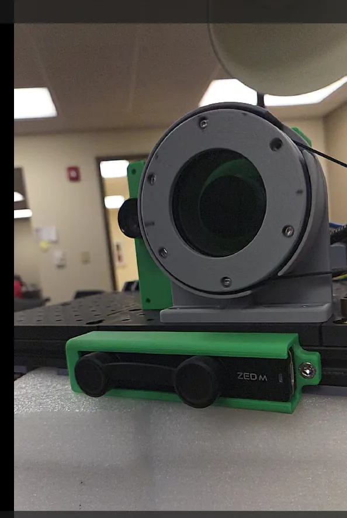
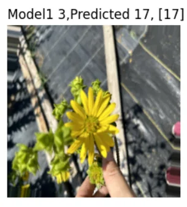
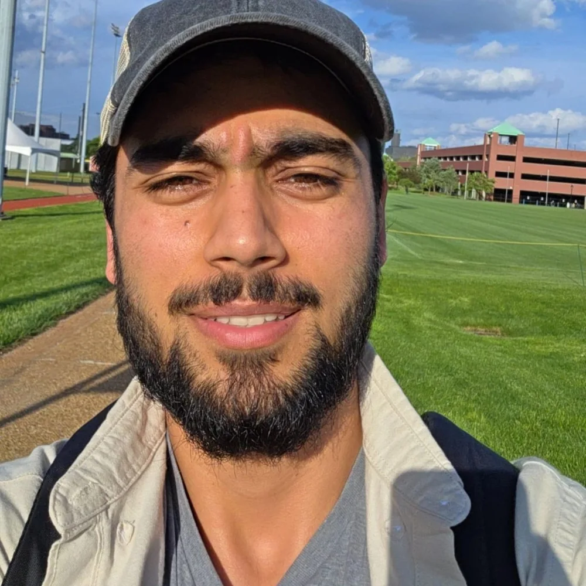

Perception starts with the sensors.
Camera–LiDAR alignment, multi-sensor calibration, pose trajectories, and dataset preparation for robotics.
ROBOTICS · PERCEPTION · 3D VISION
I’m Shahid. I build perception and reconstruction systems that turn sensor data into spatial understanding.
Currently working on robotics at Field AI.
Procedural geometry study · illustrative, not experiment data
Sensor calibration ↗ 3D reconstruction ↗ Gaussian splatting ↗ Simulation
01 / CURRENT FOCUS
Field AIAt Field AI, my work connects robot sensing, 3D scene reconstruction, and simulation—building the workflows that make experiments easier to inspect, compare, and repeat.
My journey so farCamera–LiDAR alignment, multi-sensor calibration, pose trajectories, and dataset preparation for robotics.
Image and LiDAR reconstruction, Gaussian scene representations, and tools for inspecting geometry and rendered views.
Containerized GPU workflows, configurable training, cloud artifacts, and reconstruction evaluation for simulation research.
02 / SELECTED WORK
Research, experiments & things I’ve builtEarlier projects that shaped how I approach
perception and robotics today.

EVENT VISION / 3D GEOMETRYWatch the experimentSatellite pose estimation and 3D reconstruction from asynchronous event-camera data, using geometric optimization to study challenging motion and illumination.
Read the paper ↗
RECONSTRUCTION / DIGITAL TWINSExplore the reconstructionUAV imagery transformed into an interactive digital twin with SfM/SLAM, point clouds, and Gaussian splatting. Built for exploring a reconstructed scene from new viewpoints.

SENSORS / CALIBRATIONA hand–eye calibration pipeline combining a robot-mounted event camera, rotating polarization optics, and synchronized ROS acquisition.

SIMULATION / DATASETSA 15 GB multi-sensor UAV dataset in CARLA, with synchronized RGB and event streams, controlled trajectories, and ground-truth poses.

LEARNING / DETECTIONFine-tuned LW-DETR for a campus environment, from dataset curation to evaluation. Achieved the highest detection and classification accuracy among the project teams.

ROS / SENSOR INTEGRATIONA ROS serial node connecting an Arduino-controlled polarizer and a Prophesee event camera. Publishes motor RPM and triggers recordings for repeatable capture.
Flower petal count regression from RGB images. Compared ResNet50 and VGGNet with custom regression heads, with the strongest results from ResNet50.


THE PERSON BEHIND THE PIPELINES ↗03 / A LITTLE ABOUT ME
I’m Shahid Shabeer Malik, a computer vision engineer working at the intersection of perception, geometry, and robotics.
My work has taken me from event-based satellite reconstruction and robot-camera calibration at Saint Louis University to 3D perception and simulation workflows at Field AI.
I enjoy connecting the full system: integrating sensors, collecting and aligning data, training models, inspecting results, and turning experiments into tools that other people can use.
04 / THE JOURNEY
Industry, research & teachingCurrent focus: sensor calibration, 3D reconstruction, Gaussian scene representations, and repeatable GPU workflows for robotics experiments.
Built 3D scenes from drone imagery using SfM/SLAM and Gaussian splatting, with Three.js/WebGL visualization. Mentored students delivering open-source software.
Developed event-driven perception, satellite pose estimation, and low-light reconstruction. Integrated event, RGB, and polarization sensors with ROS and Arduino synchronization.
Led a team exploring event/RGB feature tracking, with real sensor acquisition and simulated data pipelines in CARLA and Unreal Engine.
Supported Deep Learning and Applied Machine Learning courses, mentoring students on neural networks, model training, debugging, and evaluation.
Saint Louis University · USA
Aug 2023 — Dec 2025Jamia Hamdard University · India
Sep 2020 — May 202305 / THE TOOLKIT
Across software, sensors & systemsPython · C++ · PyTorch · TensorFlow · OpenCV · Event vision · Transformer models
ROS / ROS 2 · Camera–LiDAR calibration · SfM / SLAM · Point clouds · Gaussian splatting · Three.js
CARLA · Unreal Engine · Linux · Docker · Kubernetes · AWS S3 · GitHub Actions · Git
06 / RESEARCH & WRITING
Google Scholar ↗S.S. Malik, A. Khan, Dr. Sapna Jain · ICT Systems and Sustainability
03 / IEEE XPLOREShahid Shabeer Malik, Aneeque Khan
07 / FROM THE LAB
The hardware, the experiments, the peopleA few frames from earlier research
and hands-on experiments.
08 / RECOGNITION
Department of Computer Science, Saint Louis University
Artificial Intelligence and Robotics Lab, Saint Louis University
Department of Computer Science, Saint Louis University
Principles of Software Development
MILESTONES & NOTES
Mentoring undergraduates on practical software projects as Tech Lead.
Received an internship offer focused on reinforcement learning and perception experiments.
Presented research on satellite pose estimation and reconstruction with neuromorphic cameras.
LET’S CONNECT
Robotics, perception, research,
or an interesting problem to explore.
{kind=link}